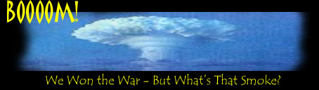
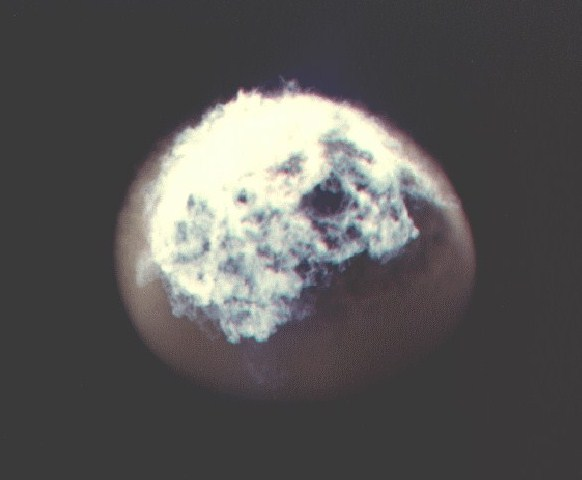

Lucky
you. You survived a nuclear war! Well, don't be too glad. What happens after
it is so gruesome, you'll wish you had died on the spot.
But
you -- you survive all that. Better take shelter: for the next days, it will rain
highly radioactive fall-out particles only. For almost three days and three
nights in a row, it will rain radioactivity in a region several hundreds of
kilometers around each impact site. And to be honest: it's best you stayed indoors for a whole year, patiently waiting until
radioactivity levels finally begin to drop.
But
wait, there's more trouble. As the mushroom clouds begin to fade, the
REAL consequences of nuclear war become apparent. From the explosion sites,
huge amounts of evaporated stuff, smoke and soot rise up into the sky. It's
quite different from the usual smoke columns that come from fires. The intense
heat from the nuclear impact sites pushes the debris straight into the highest
parts of the atmosphere, the so-called stratosphere. There, it slowly starts
to disperse, covering ever bigger portions of the world. But what's worse --
the soot blocks the Sun.
Within
days, a weird and unprecedented climate shift sets in. Total darkness covers
everything. Temperatures drop rapidly. And chances are the soot blanket that
prevents the Sun from shining spreads across the globe, transforming even the
Latin Americas, Asia and Africa into chilly shadow worlds. There you have it:
the infamous, dreaded Nuclear Winter.
Within weeks, it's minus 23 to 30 degrees Celsius everywhere. Do you live near the shore? Consider yourself lucky: since oceans cool so slowly, temperatures near the sea will drop `only' some five to ten degrees. But there is a downside: because of the big temperature differences between the sea and the inland, unimaginable storms and hurricanes will harass the coastal areas.
|
 |
|
|
Oh,
and that's just the beginning of your Winter out of Hell. Slowly,
particle-by-particle, the soot will begin to fall back to the Earth. The
results are not what you call pleasant. When it rains, the rain consists of
burning sulphuric acid. And when it doesn't rain, the wind blows huge amounts
of tiny particles of radioactive dust into your face. There's not enough
radioactivity there to kill you. But it won't do you much good either.
Meanwhile,
you're not the only one having a hard time. Plants, living on sunlight and
warmth, will die within weeks. Animals, relying on both plants and warmth, die
too. Other animals perish because all water is frozen. After a
couple of months, there won't be any birds anymore. And what's worse, the
animals with the biggest chance to survive are not exactly what you call good company in the
pitch-black darkness: insects, rats, flies and cockroaches. They have a great
time, having all those dead bodies to feast on and no birds to hunt them down.
Oh,
and talking of dead bodies: there will be outbreaks of all kinds of diseases.
The radioactivity will speed up the mutation rate of viruses and bacteria
tremendously. There will be outbreaks of all kinds of diseases, while it is
more than likely all kinds of new diseases will pop up too. By the way,
the radioactivity boosts the mutation rate of your own DNA as well -- which in
effect means you'll develop all kinds of cancers and give birth to gruesomely
malformed babies.
By
now, you may start to wish those mean, black clouds that block the sun would
bugger off. And eventually,
they will. Depending on how many bombs exploded during the nuclear war, it
will roughly take several months to a year before the sky starts clearing up
again. But when it does, the end of all endurance is still not in sight.
One
particularly nasty problem is that the soot from the impact sites has
wiped out most of the ozone layer by chemical reactions. And without the ozone
layer, we're exposed to the malignant ultraviolet radiation from the Sun. The
UV-radiation kills the plants that may still be there, and causes more cancers and
even sores and burns among humans. For years and years to come, you'll have to
take shelter when the Sun shines.
And
for the long term? The prospects are grim. With society disrupted, the food
chain torn apart and humanity diminished, we'll be lucky if we're `only'
thrown back into the Stone Age. A lot of species will become extinct. We may
very well be one of them.
But
wait a minute. Nuclear war, is that still possible? The answer is a
plain and clear `yes'. Sure, the Russians and the West more or less like each
other now. But the world is still armed to the bone with some 50,000 nuclear
warheads. Although there's no finger on the trigger right now, the trigger is
still within reach -- and the gun is fully loaded.
There's
one reassurance, however. In principle, since its discovery in the 1980s,
everybody knows what a Nuclear Winter is. You'd expect the world leaders
to keep that in mind. The biggest nuclear weapons threat facing us right now
is a small-scale nuclear war -- or a nuclear bomb attack by terrorists. But
although that's awful enough, a small-scale nuclear war isn't enough to
trigger a full-scale Nuclear Winter.
But
then again, as history demonstrates, things can get out of hand really fast.
One moment there's peace, and the next moment, there's war. So better go find
those good old `Ban the bomb'-buttons of yours again!
 |
 |